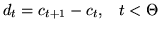
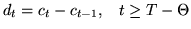

The performance of a speech recognition system can be greatly enhanced by adding time derivatives to the basic static parameters. In HTK, these are indicated by attaching qualifiers to the basic parameter kind. The qualifier _D indicates that first order regression coefficients (referred to as delta coefficients) are appended, the qualifier _A indicates that second order regression coefficients (referred to as acceleration coefficients) and the qualifier _T indicates that third order regression coefficients (referred to as third differential coefficients) are appended. The _A qualifier cannot be used without also using the _D qualifier. Similarly the _T qualifier cannot be used without also using the _D and _A qualifiers.
The delta coefficients are computed using the following regression formula
In older version 1.5 of HTK and earlier, this end-effect problem was solved by using simple first order differences at the start and end of the speech, that is
|  | (5.17) |
|  | (5.18) |
For some purposes, it is useful to use simple differences throughout. This can be achieved by setting the configuration variable SIMPLEDIFFS to true in HPARM. In this case, just the end-points of the delta window are used, i.e.
When delta and acceleration coefficients are requested, they are computed for all static parameters including energy if present. In some applications, the absolute energy is not useful but time derivatives of the energy may be. By including the _E qualifier together with the _N qualifier, the absolute energy is suppressed leaving just the delta and acceleration coefficients of the energy.